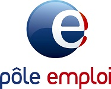

<link rel="import" href="../../bower_components/polymer/polymer.html">

<link rel="import" href="../../bower_components/iron-flex-layout/iron-flex-layout-classes.html">

<link rel="import" href="../../bower_components/paper-material/paper-material.html">

<link rel="import" href="../shared-styles.html">

<dom-module id="orca-customers">
    <template>
        <style is="custom-style" include="shared-styles iron-flex iron-flex-alignment">
        :host {
            display: block;
        }
        
        paper-material {
            padding: 16px;
        }
        
        img {
            max-height: 150px;
            margin-bottom: 16px;
        }
        
        img.quotation-marks {
            float: left;
            opacity: .1;
            position: absolute;
            top: -16px;
            left: 0;
            /*transform: rotateZ(180deg);*/
        }
        
        .layout.horizontal paper-material + paper-material {
            margin-left: var(--default-margin);
        }
        
        .no-wrap {
            white-space: nowrap;
        }
        
        div.user .position {
            text-align: center;
            font-weight: 400;
        }
        
        .quoting p {
            text-align: right;
            margin: 0;
        }
        
        .quoting .quote-notes {
            color: grey;
        }
        
        .quoting .quote-notes::before {
            content: '[\a0';
        }
        
        .quoting .quote-notes::after {
            content: '\a0]';
        }
        
        .quoting hr.vertical {
            margin: 8px 16px 8px 24px;
        }
        
        em {
            color: var(--primary-color);
        }
        
        h1 {
            text-align: center;
            margin-bottom: var(--default-margin);
        }
        </style>

        <h1 class="plain">Ils nous font confiance</h1>
        <div class="layout horizontal">
            <paper-material class="layout vertical center-center customer">
                
                <span class="no-wrap"><em>P&ocirc;le emploi</em> &Icirc;le-de-France</span>
            </paper-material>
            <paper-material class="layout horizontal center quoting">
                <div>
                    <p class="quote">
                        Apr&egrave;s 2 ans de projet avec <em>NCLS Development</em>, c'est toujours un plaisir de pouvoir compter sur l'assistance compl&egrave;te d'un fournisseur.
                        <br />
                        <br />De plus, <span class="quote-notes"><em>Orca</em></span> offre des possibilit&eacute;s d'&eacute;volution et d‘int&eacute;gration de nouvelles orientations dans les domaines de l'hygi&egrave;ne, de la sant&eacute; et de la s&eacute;curit&eacute;.
                    </p>
                </div>
                <hr class="vertical self-stretch">
                <div class="user no-wrap layout vertical center">
                    
                    <em>Jean-Baptiste BARD&Eacute;</em>
                    <div class="position">
                        Directeur de la S&eacute;curit&eacute;
                        <br /> et Qualit&eacute; de Vie au Travail
                    </div>
                </div>
            </paper-material>
        </div>
    </template>
    <script>
    Polymer({
        is: 'orca-customers'
    });
    </script>
</dom-module>
